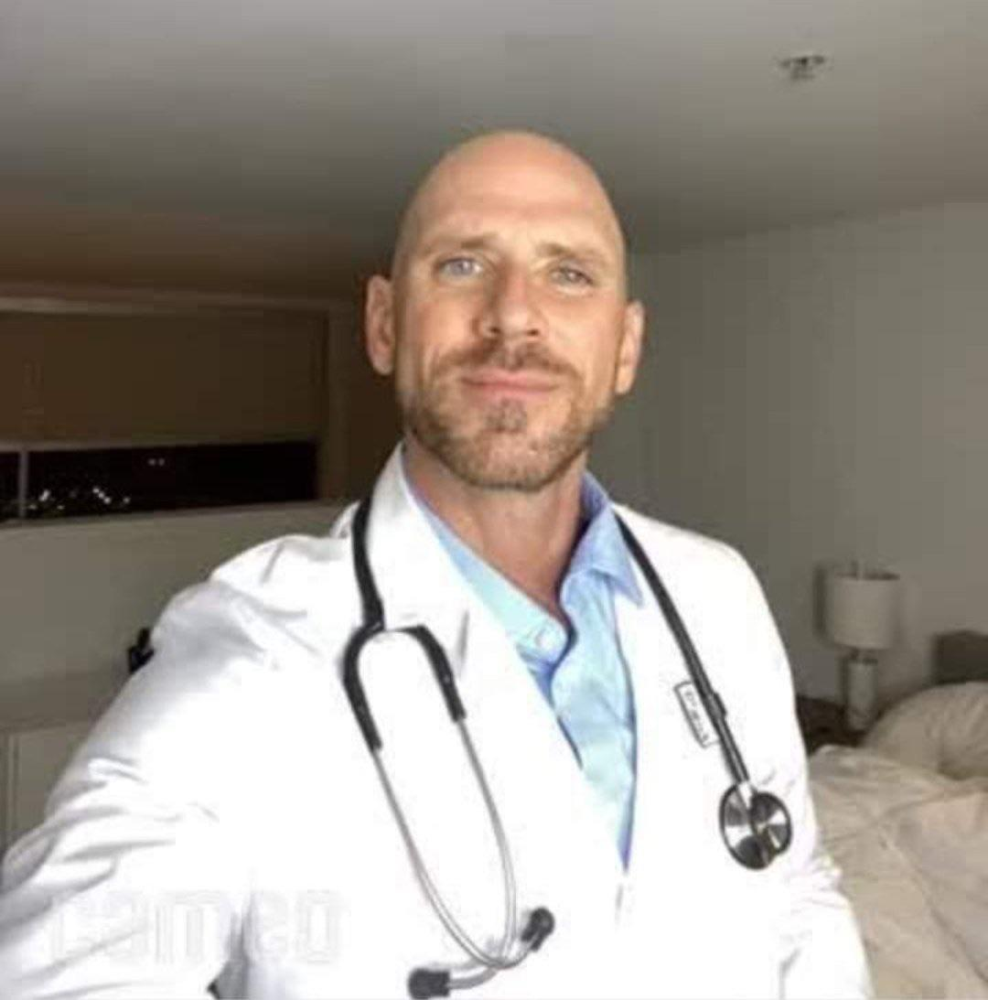

Meet Our Doctors

Dr. Johnny Sins - Lead Body Specialist
Dr. Sins embodies the epitome of excellence in the realm of
healthcare and body anatomy. Renowned for his unwavering
dedication to patient care and pleasure.
Dr. Sins is a
revered figure in his field and online. His journey towards becoming
a distinguished physician is marked by a profound commitment to
improving the lives of his patients through comprehensive medical
examinations and practises.
Dr Sins is a truly valuable member of our team and has been
given an 110% satisfaction rate from all his clients.
Dr. Vladimir Vladimirovich Putin - Atomic Tools Officer
Dr. Putin is a talented and gifted individual who is a good role model
and leader for our team. He specialises in the atomic field of our tools
and utensils.
Dr. Vladimir Vladimirovich born and raises in the motherland of the Soviet.
His inovative tools created the micro-microscope that was used to see the tiny
features and save the historic patient Donny Blu.
He is a team member we couldnt live without and are so glad he has stayed with us
for the last 69 years.